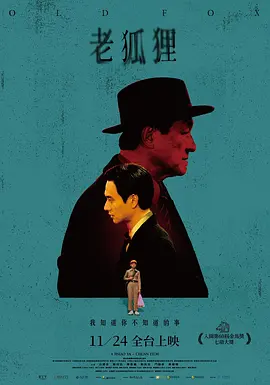

8.1
老狐狸
Old Fox
2023
中国台湾
评分 8.1
导演:
萧雅全
演员:
白润音 / 刘冠廷 / 陈慕义 / 刘奕儿 / 门胁麦
类型:
剧情
剧情简介
故事落在1990年的台湾，空气里带着股市狂飙时特有的躁动。廖界跟着父亲廖泰来住在旧公寓里，家里陈设简单，父子俩的生活也像他们的性子一样朴实。傍晚的巷口常能听见廖泰来推着脚踏车回来，那是一种让小男孩安心的声音。父亲笃信人性本善，总告诉廖界：“做人要老实，钱慢慢赚。”然而，时代的轮盘正悄悄改变，外头的世界已不按这个逻辑运转。街头的股票行情板闪得刺眼，邻居们的谈话里充满“一夜翻身”的传闻。有人突然换了新车，有人因为投资失败家声尽毁。廖界在上学路上，看见大人们神情恍惚、兴奋又不安，这些变化让他第一次察觉所谓“大人的世界”并不如父亲描述的那样简单。与此同时，家中的开支越来越紧，物价飙涨让他们的生活变得吃力。就在此时，“老狐狸”出现了。这个精明干练、城府极深的男人，有一种让人无法确定他是好是坏的气场。他能准确判断股市风向，也能一眼看穿人心的弱点。老狐狸对廖界父子表现出近乎温柔的关照——请客、指点、提醒——但每句话背后都像藏着一把锋利的小刀。廖泰来对他的“好意”心存疑虑，却又找不到拒绝的理由。廖界在两位大人之间游移，一边是父亲固守的正直，一边是老狐狸教他的“现实规则”。他在学校操场上沉默发呆，在夜晚的客厅里听着大人争论价值观，也开始思考：善良是否真的值得坚持？在快速膨胀的社会里，他们是否还留得住自己的位置？影片用温柔克制的镜头描摹时代的躁动，让观众在父子日常的细节中，看见诚实在现实压力下逐渐被挤压的无奈。它不是简单的成长故事，而是在问：当世界变得急促又尖锐，人要如何保持不被吞没的样子？